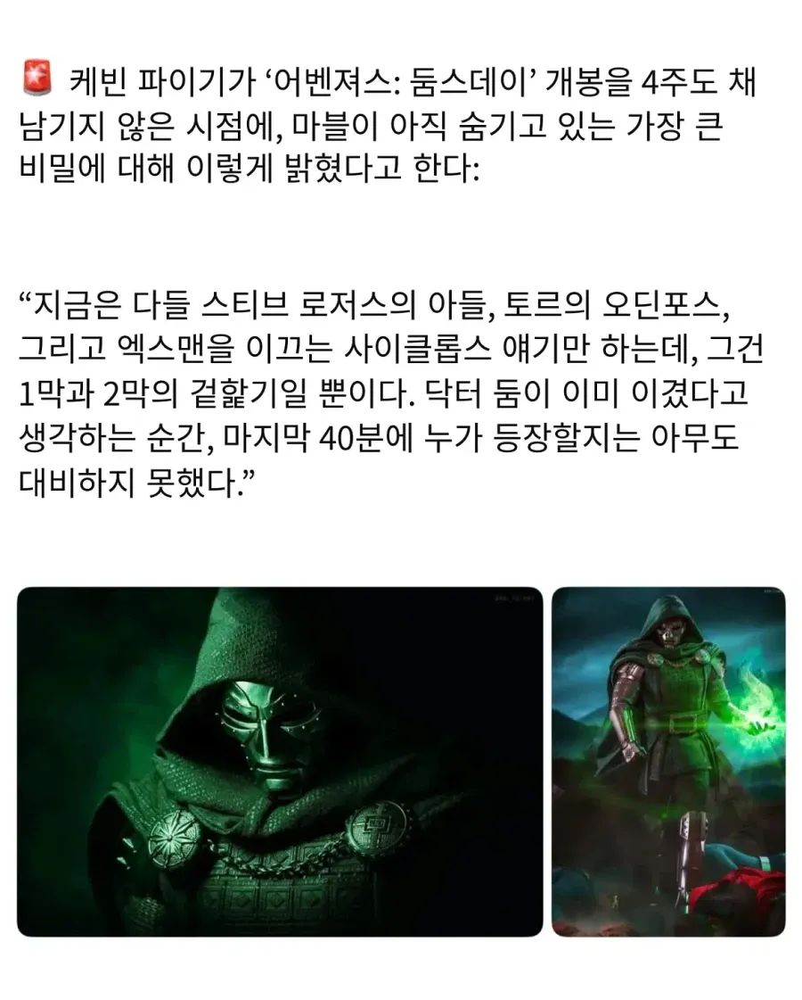
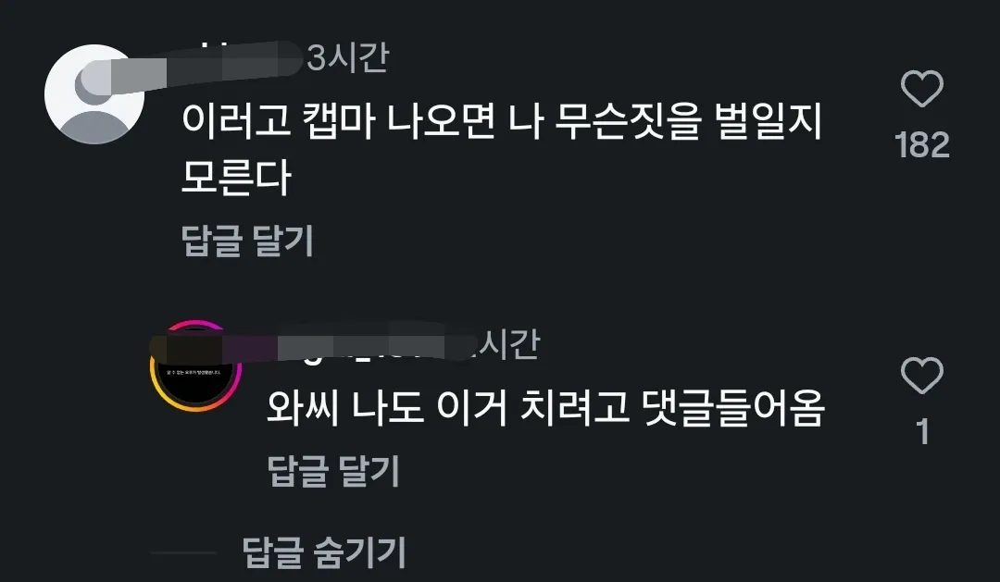

48 · 5 · 1 시간 전 · 원문


캡마 쉬헐크 아이언하트 3명이 동시에!
수집 당시 댓글 5개
dd2d · 15 시간 전
반전이 있다고 공개하면 재미가 없지 않아? 쓸데없이 기대치만 올리고
02군번야스오장인 · 13 시간 전
캉캉이형 돌아오나? 솔직히 남자가 여친팬게 큰잘못은 아니잖아
↳ 답글 · 붉은겨우살이 · 13 시간 전
ㄹㅇ루다가 ㅋㅋㅋ
걍 그 인종 다운건데
약간모자람 · 3 시간 전
스파이더맨임
위저드리 · 2 시간 전
저 세 명 나오면 죽는다 진짜
반전이 있다고 공개하면 재미가 없지 않아? 쓸데없이 기대치만 올리고